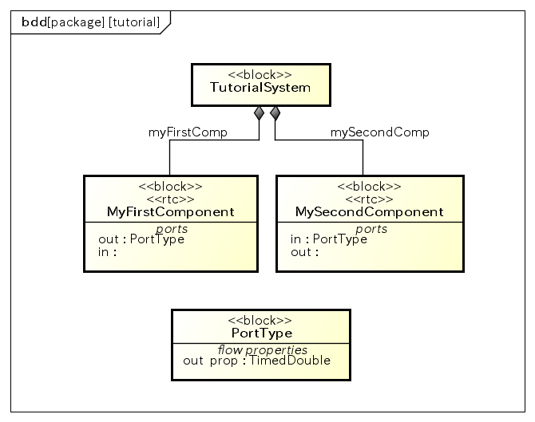
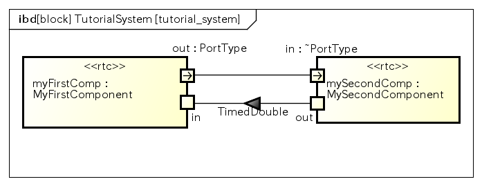

Powered By
このプラグインは、独立行政法人産業技術総合研究所と共同研究した成果を活用しています。
Table Of Contents
Previous topic
RT(Robot Technology)コンポーネントを設計する

このプラグインは、独立行政法人産業技術総合研究所と共同研究した成果を活用しています。
RT(Robot Technology)コンポーネントを設計する
RT(Robot Technology)コンポーネントを設計する では、SysMLを用いて最も基本的なRTコンポーネントの設計方法について説明しました。
このチュートリアルでは、次の項目について説明します。
Hint
ポートが扱うデータ型に、ユーザー独自のデータ型を利用したい場合は、RTCBuilderによる独自データ型の利用 を参照して下さい。
RTC:TimedDouble型のデータを取り扱うポートをもつMyFirstComponent、及びMySecondComponentと、その関係を設計します。
ブロック図

内部ブロック図

それでは、RTコンポーネントにRTC::TimedDouble型のデータを出力するポートを定義してみましょう。
内部ブロック図のツールバー「ポート」を選択し、RT(Robot Technology)コンポーネントを設計する で作成した”myFirstComp:MyFirstComponent”パートの枠線の好きな場所を選択します。するとパート上にポートが作成されます。
Hint
ポートはブロック定義図でも設計できます。
ポートには名前を設定する必要があるため、ポートを選択し、プロパティビューからoutという名前を設定して下さい。
次にポートがRTC::TimedDouble型のデータを出力することを設計します。ポートが扱うデータ型やポートの方向性は、ポートの型となるモデルのフロープロパティやアイテムフローで設計します。
フロープロパティを用いて、ポートが扱うデータ型や方向性を設計するには、以下の手順で行います。
ポートのフロープロパティを設計するために、まずはポートの型を設計します。
先程作成したoutポートを選択し、プロパティビューから「型となるブロックを新規作成します」ボタンをクリックします。
ポートの型となるブロックのプロパティビューが表示されるので、名前にPortTypeと設定して下さい
次にフロープロパティを設計するため、PortTypeの「フロープロパティ」タブを開きます。
追加ボタンを押下し、作成されたフロープロパティの名前をprop、型をRTC::TimedDoubleと設計して下さい。
次に方向性を定めるため、追加したフロープロパティの方向欄から選択します。 今回は出力する方向性を示すため、outを選択して下さい。
Hint
方向性はoutの他に、入力を示すin、入出力両方を示すinoutが設計可能です。
これまでの操作で、PortTypeに次のようなフロープロパティが作成されているはずです。
このようにポートの型となるブロックのフロープロパティを用いて、データ型や方向性を設計できます。
Hint
SysMLでは、フロープロパティは複数設計でき、ポートが扱う可能性があるデータやその方向性は複数設計できます。 ただし、RTコンポーネントのデータポートとして設計されるブロックのポートは、単一のデータ型と方向性で設計される必要があります。 その為、異なるデータ型や方向性を持つ複数のフロープロパティは設計できません。
フロープロパティを設計したので、以下の手順で、先程作成したポートを介して他のパートとやり取りしていることを設計します。
ブロック定義図ではパート名は関連端名として表現されます。既に作成されているMyFirstComponentとTutorialSystemの間のコンポジット関連を見ると、myFirstCompと表示されているはずです。 同じように、関連端名をmySecondCompと設計して下さい。
Hint
関連端名はコンポジット関連を選択し、関連端AもしくはBのタブを開き、名前欄から設計できます。
または図上で、部品となる側のブロックに近いコネクタの端にマウスをホバーさせて表示される、横棒のアイコンをクリックして名前を設定することでも設計できます。
これまでの操作で、ブロック定義図でTutorialSystemを構成する部品として、MySecondComponentを追加できましたので、内部ブロック図を開き、MySecondComponentのパートを作成しましょう。
実はブロック図上でパート関係を作成しているので、既にmySecondComp:MySecondComponentパートのモデルは作成されています。 このパートを内部ブロック図上に表示するため、内部ブロック図を開き、内部ブロック図上のコンテキストメニューから「パートの表示」を選択して下さい。
表示されたダイアログに名前にmySecondComp、ターゲット(ブロック)にMySecondComponentという行が表示されているはずです。この行の表示欄のチェックをONにして、了解ボタンを押下して下さい。
このような手順でシステムに含まれるパートを追加設計できます。
次にパートを作成した後に、myFirstCompパートのoutポートとやり取りするための入力ポートinを作成します。
ツールバー「ポート」からmySecondCompパートにポートを作成し、名前にinと設定して下さい。
ポートが扱うデータとその方向性は、フロープロパティで設計しましたが、今回は既にmyFirstCompパートに設計されたoutポートとやり取りということが分かっています。 改めて、inポートにポートの型を設計しフロープロパティを設計するのは、効率が悪いと感じられるでしょう。
このような場合に対応するため、SysMLではポートに共役というプロパティが用意されています。
inポートはRTC:TimedDouble型のデータを扱うことは正しいですが、今の状態では方向性がoutとなっています。これをin方向と設計するため、ポートのプロパティの共役をtrueに設定してみて下さい。
すると方向性がinとなり、ポートの型の図上での表示が共役を意味する”~”が付与された、”~PortType”となっているはずです。
このようにポートの共役を使うことで、対となるポートを設計することができます。
それでは、outポートとinポートを介して、myFirstCompとmySecondCompパートがやり取りしていることを設計しましょう。
ブロック、パート間の関係は、主にコネクタやアイテムフローで設計します。この節ではコネクタを用いて設計します。
内部ブロック図のツールバー「コネクタ」を選択し、myFirstCompパートのoutポートと、mySecondCompパートのinポートの間にコネクタを作成します。
このようにフロープロパティによって、ポートが扱うデータ型と方向性、それらのポート間がやり取りしていることをコネクタで表現することができます。
ポートが扱うデータ型とその方向性、パート間のやり取りを設計する、もうひとつの主な方法として、アイテムフローがあります。
まずmyFirstCompパートとmySecondCompパートに新しいポートをそれぞれ１つ作成してください。 myFirstCompパートのポートにはin、mySecondCompパートのポートにはoutという名前を設定して下さい。
先程はポートの型を設計し、フロープロパティを設計しましたが、今回はアイテムフローで表現してみます。
内部ブロック図のツールバー「アイテムフロー」を選択し、mySecondCompパートのoutポートから、myFirstCompポートのinポートに向けて線を引いて下さい。
次に作成したアイテムフローを選択し、プロパティビューから「Convey」欄の追加ボタンを押下し、RTC::TimedDoubleを選択してください。
この操作で、mySecondCompからmyFirstCompにRTC::TimedDouble型をポートを介して、やり取りすることを表現できます。
Conveyではアイテムフローで実際に流れるデータの型を設計できます。フロープロパティのようにプロパティ名と流れるデータを表現するには、アイテムフローのアイテムプロパティから設計します。
フロープロパティでは、ポートが扱う可能性があるデータ型を設計でき、アイテムフローでは実際に流れるデータを設計できる違いがあります。
例えば、フロープロパティでは液体が流れる可能性があるとして設計し、アイテムフローでは水、もしくは油が実際には流れるといったようなことが表現できます。
このようにポートとコネクタ、もしくはアイテムフローを用いて、RTコンポーネントにおけるデータポートを介したやり取りを設計でき、RTS/RTCプロファイルとして生成できます。
RT(Robot Technology)コンポーネントを設計する で行ったように、内部ブロック図からRTC/RTSプロファイルを生成するため、これまで設計してきた内部ブロック図を開き、メニュー ツール ‣ SysML-RTM ‣ 開いている図からRTC/RTSプロファイルを生成する を選択します。 表示されるダイアログで、RTC/RTSプロファイルを生成するフォルダにを指定し「生成」ボタンを押下して下さい。
出力場所で指定したフォルダ(以下の例では/tmp/tutorial/dataport_tutorial)には、次のようなファイルが生成されています。
/tmp/tutorial/dataport_tutorial/ |- MyFirstComponent.xml |- MySecondComponent.xml |- tutorial_system.xml
RTコンポーネントMyFirstComponentのRTCプロファイル
RTコンポーネントMySecondComponentのRTCプロファイル
TutorialSystemのRTSプロファイル
このように生成されたRTCプロファイルをRTCBuilderにインポートし、MyFirstComponentやMySecondComponentのソースコードのひな形を生成できます。
また生成されたRTSプロファイルを用いて、RTSystemEditorでシステムを復元できます。
基本的な手順は RT(Robot Technology)コンポーネントを設計する と同様に、システムエディタのコンテキストメニュー「Open and Restore」を選択し、RTSプロファイルを選択し復元します。 ただし、RTSプロファイルのインポート で説明したように、復元する前にSysMLのパートで指定したプロパティ名とRTコンポーネントのインスタンス名、CORBA Naming Serviceにバインドする際の名前を一致させて下さい。
ex)MyFirstComponent/rtc.conf
naming.format : myFirstComp.rtc manager.components.precreate: MyFirstComponent?instance_name=myFirstCompex)MySecondComponent/rtc.conf
naming.format : mySecondComp.rtc manager.components.precreate: MySecondComponent?instance_name=mySecondComp
このようにSysMLのポートを用いて、RTコンポーネントにおけるデータポートを介した、ロボットシステムのモデルを設計できます。
{kind=link}
{kind=link}